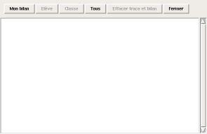

| Accueil | Activités | Bilan | Options / Réglages | Développeurs |
Mulot permet d'enregistrer les résultats nominatifs obtenus pour les différents exercices.
Le menu Fichier contient le sous-menu bilan.
Sur AbulÉdu, le suivi est automatique en fonction du nom d'utilisateur inscrit dans la boîte de dialogue à l'accueil d'AbulÉdu. Le suivi peut donc concerner un élève en particulier ou un groupe d'élèves à condition qu'il ait été inscrit par l'administrateur (cf. doc d'AbulÉdu). Pour les utilisateurs sous Windows, un menu Utilisateurs permet de s'inscrire pour un suivi personnalisé. Lorsqu'on clique dessus, une boîte de dialogue apparaît permettant à l'enfant de saisir son nom ou son prénom. 
Cliquez sur Fichier
-> Bilan
Cliquer ensuite sur "Mon
bilan" pour voir vos résultats, ou sur "Tous" pour voir les
bilans des activités de tous les
élèves.
Un tri par élève ou par classe est aussi possible
avec les boutons "Elève"
et "Classe".
Le bilan indique :
| Catégorie | Nombre d'utilisation | Niveau atteint | Durée minimale | Durée moyenne | Durée maximale |
|---|